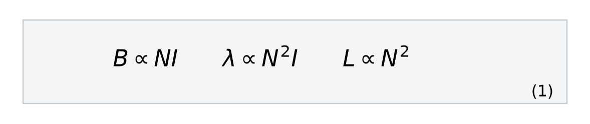
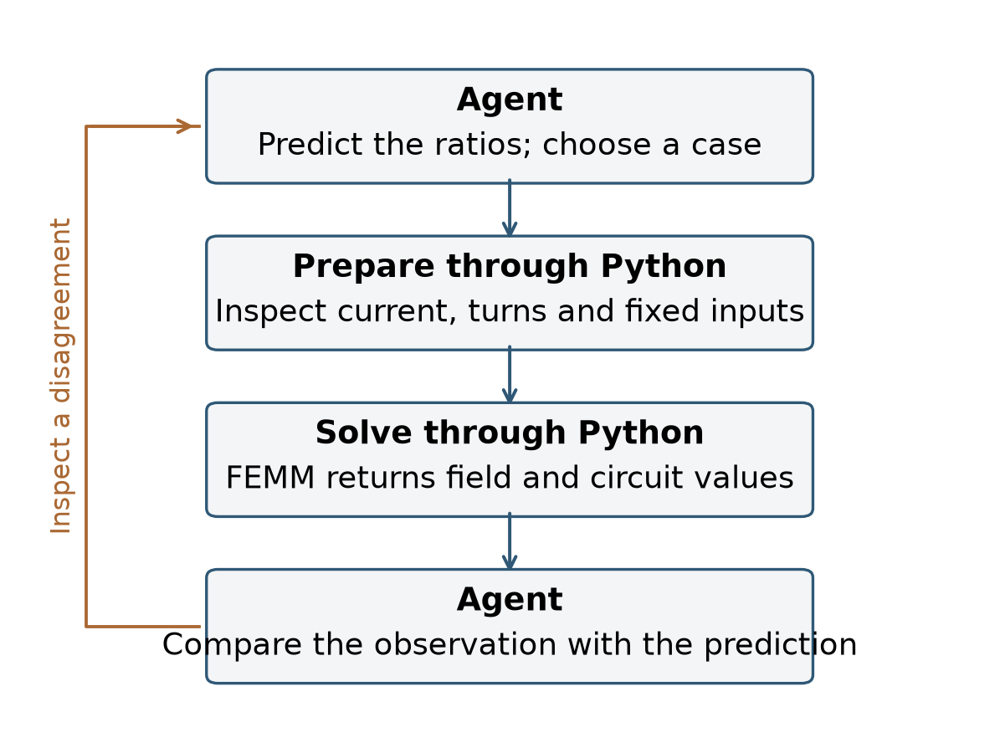
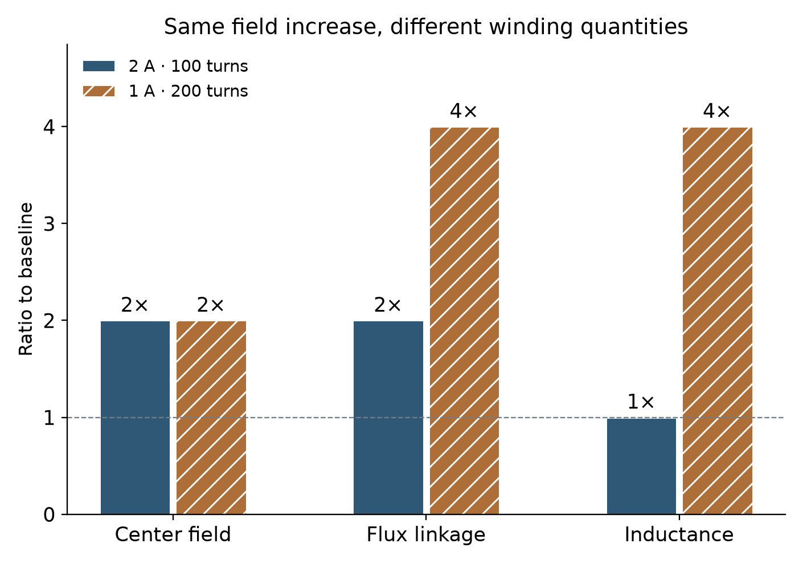

Part 2: Giving an AI Agent a FEMM Experiment
Use the coil from Part 1 to connect an agent’s prediction, tool call and numerical result.
The coil from Part 1 gives us a small experiment that an AI agent can carry out and we can check ourselves. Ask it to double the current, then return to the original current and double the turns. Both changes strengthen the magnetic field. They have different effects on inductance.
We’ll use that difference to follow a complete task: make a prediction, prepare the intended model, solve it and compare the measurements. The agent works through Python tools. FEMM performs the field calculation.
Projects such as FEMM Agent Suite already connect agents to FEMM, with modeling guidance and checks. FEABench studies agents using finite-element tools in COMSOL. Our example keeps the physical problem small so that each decision and its result are visible.
Predict what should change
The baseline is the same short air-core coil: 100 turns carrying 1 A, with an inner radius of 25.4 mm, outer radius of 50.8 mm and axial length of 25.4 mm. Geometry, materials, boundary treatment and mesh settings stay fixed throughout the experiment.
First change only the current, from 1 to 2 A. The magnetic excitation doubles, so the field and flux through each turn double. There are still 100 turns, so total winding linkage doubles too. Dividing that doubled linkage by the doubled current leaves inductance unchanged.
Now return to 1 A and change the winding to 200 turns. The excitation doubles again. There are also twice as many turns linking the stronger field, so total linkage increases fourfold. Current is unchanged, making inductance four times the baseline.

These predictions determine what we measure. Center field alone cannot distinguish the two changes: both should double it. Winding linkage and inductance reveal the difference. We are comparing magnetic models; wire gauge, resistance and heating would require additional choices for a physical winding redesign.
Give the agent an inspectable tool call
The companion coil_tools.py provides two operations. prepare expands the requested current and turn count into a complete case without solving it. solve runs the case and returns the report. The measurements helper selects the current, linkage, inductance, center field and checks from that report.
Figure 1 shows how an agent uses those operations. Its first job is to decide what calculation will answer the question. After a tool call, the returned inputs or measurements give it something specific to inspect before choosing the next action.

Here is a task to give a coding agent with access to the companion tools and the configured solver:
Using the Part 1 coil, compare 100 turns at 2 A and 200 turns at 1 A with the 100-turn, 1 A baseline. Keep all other settings fixed. Predict the field, linkage and inductance ratios before solving. Inspect the prepared inputs, run each case in a new result folder and check the ratios to a relative tolerance of 0.1%.
For the current change, the Python interaction is short:
from coil_tools import prepare, solve, measurements
plan = prepare(current=2, turns=100)
print(plan["parameters"])
report = solve("work/current-2A", current=2, turns=100)
print(measurements(report))Before calling solve, the agent should confirm that the prepared current is 2 A and the turns remain 100. For the second case, those arguments become 1 A and 200 turns. Keeping both changes explicit avoids an experiment in which current and turns accidentally change together.
The setup note explains where to run this code. The complete replay_experiment.py repeats all three cases, writes the predictions before execution and checks that the executed plans match the prepared cases. This gives you a reproducible numerical exercise without requiring an LLM account.
Read the result against the prediction
The native baseline gives 0.646948 mH and a center axial field of 1.612864 mT. Doubling current doubles the center field and linkage, while inductance remains 0.646948 mH. Doubling turns at the original current doubles the center field but raises inductance to 2.587792 mH. Figure 2 puts the measured ratios beside one another.

There are two distinct checks here. The published 0.64707 mH reference describes the original 100-turn geometry and still applies when only current changes in this linear model. It does not describe a 200-turn winding. That run is therefore recorded as solved_unassessed against the published target, while its separate fourfold-scaling check passes.
This is a useful observation for an agent to explain. The solve completed, the expected relationship held, and the old reference belongs to another winding. If a measured ratio had disagreed, the next step would be to inspect the actual current, turn assignment and measurement definition before proposing a new physical explanation.
The reported numbers come from the retained native three-case replay. They verify the tool’s numerical task. Evaluating how reliably an LLM chooses and uses those tools would require a separate set of agent trials.
Keep the conditions with the result
The useful lesson is that these scaling relationships held for a fixed, linear air-core model. The saved record should include those conditions and the result folders, so that a later task can inspect the evidence.
In Part 3, we’ll give that record a place in the agent’s persistent engineering notebook. Adding a permanent magnet will show why remembering the measurement’s conditions matters as much as remembering the calculation.
The complete examples and recorded results are available alongside this article.